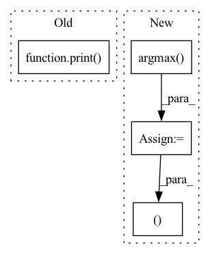

Pattern ID :12660
Before Change
classes, indexes = np.unique(image_pred_[:, -1], return_index=True)
for index, coco_class in enumerate(classes):
probability = image_pred_[indexes[index]][4] * 100
print( "Detected", coco_labels[int(coco_class)], "{:.2f}%".format(probability))
def letterbox_image(img, inp_dim=608):
img_w, img_h = img.shape[1], img.shape[0]
w, h = inp_dimAfter Change
// Iterate over batches
for img_pred in prediction:
max_conf = np.amax(img_pred[:,5:5+num_classes], axis=1)
max_conf_score = np.argmax( img_pred[:,5:5+num_classes], axis=1)
max_conf_score = np.expand_dims(max_conf_score, axis=1)
max_conf = np.expand_dims(max_conf, axis=1)
seq = (img_pred[:,:5], max_conf, max_conf_score)
image_pred = np.concatenate(seq, axis=1)
non_zero_ind = np.nonzero(image_pred[:,4])[0]
assert all(image_pred[non_zero_ind,0] > 0)
image_pred_ = np.reshape(image_pred[np.squeeze(non_zero_ind),:], (-1, 7))
classes, indexes = np.unique(image_pred_[:, -1], return_index=True)
for index, coco_class in enumerate(classes):
label, probability = coco_labels[int(coco_class)], image_pred_[indexes[index]][4] * 100
print(f"Detected {label} {probability:.2f}")
labels.append(label)
return labels
In pattern: SUPERPATTERN
Frequency: 3
Non-data size: 4
Instances Fragment ID: 42935231
Project Name: geohot/tinygrad
Commit Name: 0f58c4c64869d44a74a08a6d5d1362d509740d1a
Time: 2023-02-26
Author: 39754370+jla524@users.noreply.github.com
File Name: examples/yolov3.py
M Class Name: AnonimousClass
N Class Name: AnonimousClass
M Method Name: show_labels(3)
N Method Name: show_labels(3)
M Parent Class:
N Parent Class:
M File Name: examples/yolov3.py
N File Name: examples/yolov3.py
M Start Line: 19
M End Line: 52
N Start Line: 15
N End Line: 36
Before Change
ap = metrics.average_precision_score(labels, predictions[:, 1])
precision, recall, thresholds = metrics.precision_recall_curve(
labels, predictions[:, 1])
print( "ap: %0.6f" % ap)
acc = metrics.accuracy_score(labels, np.argmax(predictions, axis=1))
np.savez(save_path + ".npz", ap=ap, precision=precision,
recall=recall, thresholds=thresholds, acc=acc, n=len(labels))
if plot:After Change
precision, recall, thresholds = metrics.precision_recall_curve(
labels, predictions[:, 1])
acc = metrics.accuracy_score(labels, np.argmax(predictions, axis=1))
auc = metrics.roc_auc_score(labels, np.argmax( predictions, axis=1) )
print("ap: %0.6f, acc: %0.6f, auc: %0.6f" % (ap, acc, auc ))
np.savez(save_path + ".npz", ap=ap, precision=precision,
recall=recall, thresholds=thresholds, acc=acc, n=len(labels)) Fragment ID: 42935234
Project Name: jtchen0528/pcl-i2g
Commit Name: 03a9c722c9b0f9bc2930c57902649922c5d7c42c
Time: 2021-08-11
Author: jtchen0528@gmail.com
File Name: test.py
M Class Name: AnonimousClass
N Class Name: AnonimousClass
M Method Name: compute_metrics(5)
N Method Name: compute_metrics(5)
M Parent Class:
N Parent Class:
M File Name: test.py
N File Name: test.py
M Start Line: 217
M End Line: 220
N Start Line: 208
N End Line: 213
Before Change
phis_count.append( (torch.tensor(phis)<0).float().sum() )
// debugging/testing if arg passed
if verbose:
print( "Negative phis:", phis_count)
return preds[torch.argmax(torch.tensor(phis_count))]
def fix_mirrors_numpy(preds, N_mask, CA_mask, verbose=0):
Filters mirrors selecting the 1 with most N of negative phis.After Change
phis_count.append( (np.array(phis)<0).sum() )
idx = np.argmax( phis_count)
// debugging/testing if arg passed
if verbose:
print("Negative phis:", phis_count, "selected", idx)
return preds[idx], stresses[idx]
def fix_mirrors_numpy(preds, stresses, N_mask, CA_mask, verbose=0):
Filters mirrors selecting the 1 with most N of negative phis.
Used as part of the MDScaling wrapper if arg is passed. See below. Fragment ID: 42935233
Project Name: lucidrains/alphafold2
Commit Name: 98e16ad2931a27f90e05df940cff72c00074028d
Time: 2021-01-17
Author: ericalcaide1@gmail.com
File Name: utils.py
M Class Name: AnonimousClass
N Class Name: AnonimousClass
M Method Name: fix_mirrors_torch(5)
N Method Name: fix_mirrors_torch(4)
M Parent Class:
N Parent Class:
M File Name: utils.py
N File Name: utils.py
M Start Line: 283
M End Line: 297
N Start Line: 288
N End Line: 309